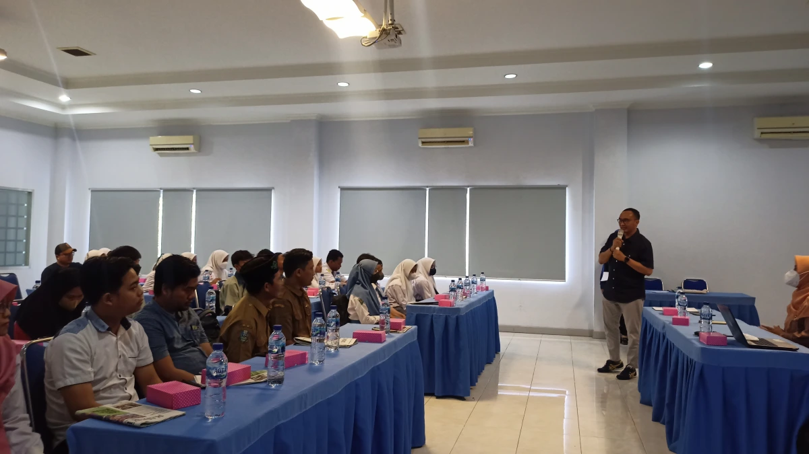
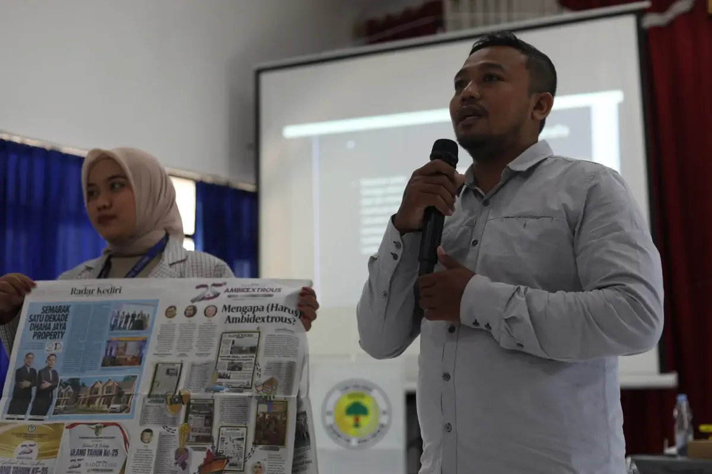
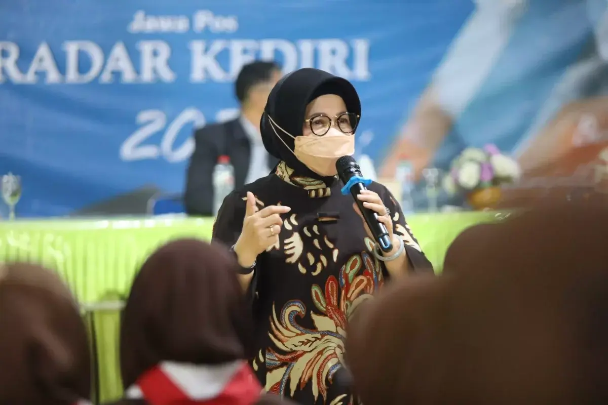
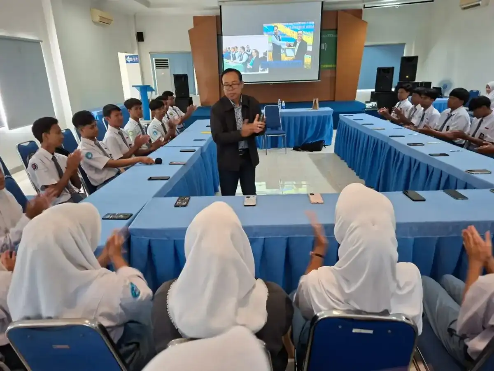
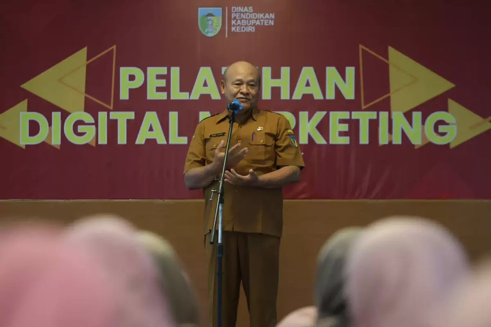
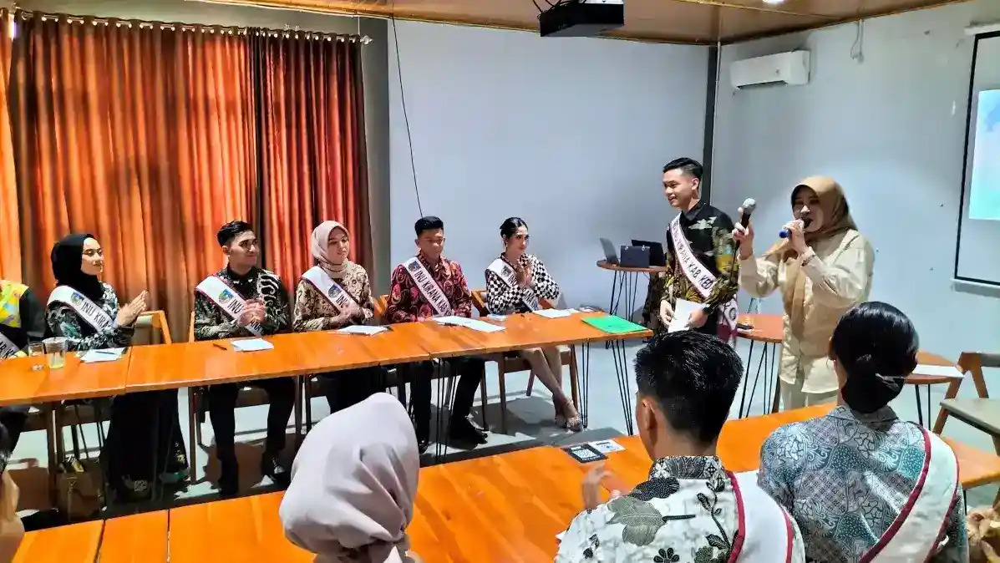
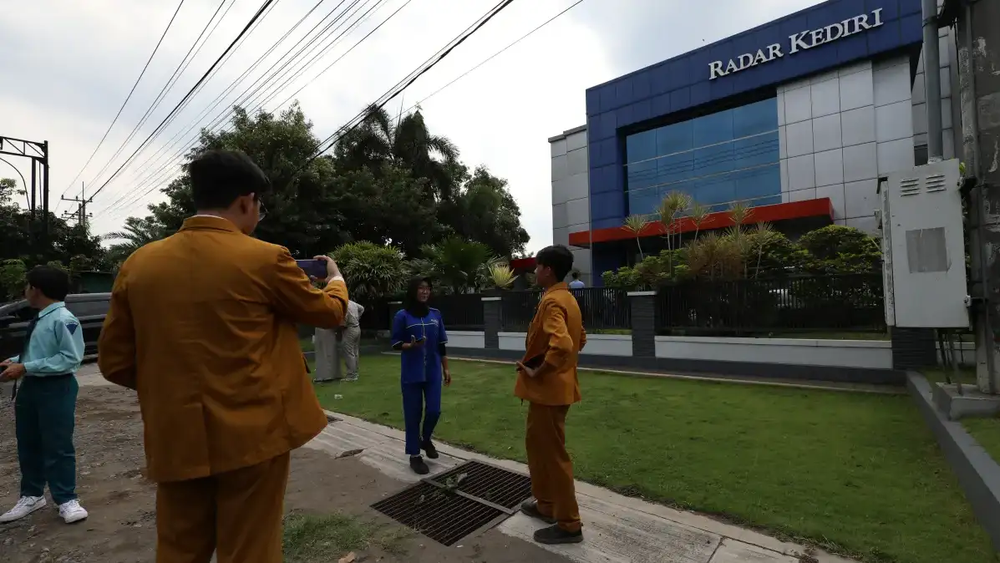

Pelatihan Media Sosial & Branding
Kuasai algoritma platform digital untuk meningkatkan engagement, membangun identitas brand yang kuat, dan mengubah audiens menjadi pelanggan setia bersama praktisi digital berpengalaman.

Ubah Followers Menjadi Loyalitas Brand
Mengelola media sosial bukan sekadar rajin posting. Dibutuhkan strategi yang tepat, pemahaman algoritma yang mendalam, dan karakter brand yang unik. Program ini dirancang untuk membongkar rahasia di balik konten viral dan cara membangun fondasi branding yang tidak mudah dilupakan audiens.




Detail Program
- Kategori Media Sosial & Branding
- Format Workshop & Bedah Kasus
- Durasi 2 Hari (In-House Fleksibel)
- Peserta Staf Humas, Admin Sosmed, UMKM
- Instruktur Shinta Nurma Ababil (Tim Digital JPRK)
- Sertifikat Ya, dari RK Institute
- Fokus Output Content Plan & Brand Guideline
Tentang Program Ini
Di lanskap digital yang penuh kebisingan, institusi atau bisnis yang tidak memiliki karakter brand kuat akan mudah tenggelam. Pelatihan Strategi Media Sosial & Branding hadir untuk membekali admin media sosial, tim humas (PR), dan pelaku usaha dengan kerangka kerja strategis dalam mengelola aset digital mereka secara profesional.
Dipandu oleh tim digital dari Jawa Pos Radar Kediri yang setiap harinya mengelola ratusan ribu interaksi audiens, peserta akan diajak membedah langsung cara kerja algoritma platform terkini. Anda tidak hanya akan diajarkan membuat konten yang estetik, tetapi konten yang relevan, "menjual", dan selaras dengan nilai-nilai atau *core values* institusi Anda.
Materi yang Dipelajari
Anatomi & Algoritma Platform
Membongkar rahasia cara kerja algoritma Instagram (Reels, Feed, Story) dan TikTok (FYP). Memahami matriks apa saja yang memicu konten untuk disebarkan lebih luas oleh sistem secara organik.
Content Planning & Manajemen
Praktik menyusun kalender redaksi (content pillar & content plan) yang terstruktur. Merencanakan ide konten untuk jangka waktu harian, mingguan, dan bulanan agar terhindar dari kebuntuan ide (creative block).
Pembangunan Identitas Brand
Menentukan Brand Persona, Tone of Voice (gaya bahasa), dan Visual Guideline (palet warna, tipografi) agar akun institusi atau bisnis Anda memiliki identitas yang kuat, unik, dan mudah dikenali oleh audiens.
Copywriting & Storytelling
Seni merangkai kata dalam caption atau script video yang mampu memancing emosi audiens, memicu interaksi (komentar/share), dan mendorong Call-to-Action (CTA) yang jelas.
Analitik & Evaluasi Kinerja
Cara membaca data insight / analitik dari platform sosial media. Belajar mengevaluasi metrik (reach, impression, engagement rate) untuk memperbaiki strategi konten pada bulan berikutnya.
Dokumentasi Pelatihan
Aktivitas kelas pelatihan media sosial dan branding bersama praktisi profesional Radar Kediri Institute

